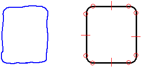

Draw with FreeSketch

-
Choose the Home tab (or Sketching tab)→Draw group→Line list→FreeSketch command
 .
. -
On the FreeSketch command bar, set the element type buttons for the types of shapes you want to draw.
-
Select an Adjust option.
-
When the Adjust option is on, the software adjusts the lines so they are horizontal or vertical when you finish drawing.
-
When the Adjust option is off, the software interprets the exact movements of your cursor. If you draw diagonally, the line displays as a diagonal line when you finish drawing.
-
-
Drag to draw a shape, and then release the mouse button.
FreeSketch interprets your sketch and places arcs, lines, circles, and rectangles when you release the mouse button.
Tip:-
IntelliSketch recognizes relationships at the start points and end points of elements. IntelliSketch places relationship handles.
-
You can select the IntelliSketch End Point option to begin or end your drawing using the end point or key point of an element, and you can select the Point On Element option to begin or end your drawing at any point on an element.
-
You can set any combination of element type buttons to specify whether you want to draw lines, arcs, circles, and/or rectangles.
-
You can use the options on the FreeSketch command bar and the commands on the shortcut menu to edit geometry you have drawn with FreeSketch.
-